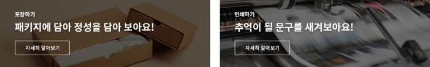

| 타입 | 개인프로젝트 (홈페이지 리뉴얼) | 작업기간 | 2023.09 ~ 2023.10 |
|---|---|---|---|
| 제작범위 | 메인페이지 1개, 서브페이지 2개 ( PREMIUM, COMUNITY ) | ||
| 설명 | 과거 근무했던 타올 쇼핑몰의 사이트를 새롭게 제작하여 보았습니다. 너무 세분화된 카테고리는 복잡한 느낌을 주기에, 메뉴를 대폭 줄이고 단순한 레이아웃으로 접근성을 높였습니다. 프로모션과 신상품이 자주 등장하는 쇼핑몰의 특성을 고려하여 이미지 배너를 활용 하여 구성하였습니다. | ||
Color
주조색
#a6ce38
#a6ce38
강조색
#007d56
#007d56
Font Style


문제점과 개선사항
Total
소비자들이 원하는 정보를 간추려 시각화하기
쇼핑몰 내에서 자주 요구되는 정보와 상품의 이미지를 잘 보여주는 홈페이지로 레이아웃 재구성, 아이콘 및 배너 제작

마우스를 대거나 클릭할때의 이벤트를 추가한 부분을 표시를 해두었습니다
리뉴얼 홈페이지에서 동작해보세요
-
메인페이지
제품 이미지위주의 구성
- 자바스크립트를 활용한 가로형 메뉴 이벤트와 사이드 메뉴, 이벤트 알림 구현, swiper를 활용하여 네개의 프로모션 이미지를 보여주는 메인 슬라이드를 구현, 배너제작: 답례품 ,패키지 페이지 연결계획, 아이콘위에 마우스를 올릴시 각 항목의 어울리는 배경을 보여주는 특별한 이벤트를 구성하여 클릭 시 해당 페이지로 이동 계획

-
회사소개 페이지
레이아웃 변경
- 너무 많은 글씨가 한곳에 보여진다면? 피로감을 느끼고 읽기가 싫어집니다. 피로감을 줄이고자 가로 2단 정렬에서 1단 정렬로 수정을 하고, 첫 단락의 기업이념을 잘 전달하고자 텍스트의 크기를 키우고 사진을 삭제하여 강조하였습니다